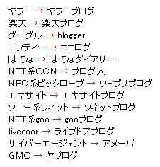

ブログ比較の一覧
ブログ比較のおすすめ情報です。
実際に作成した無料ブログもいくつかあります。独自ドメイン対応やアフィリエイトが自由なもの、HTML編集が可能なものなど様々あります。
中小規模のサービスは途中で運営中止になることが多いため、大手の専門ブログサービスを利用されるとよいでしょう。
HTMLの編集が可能で自由度が高い無料ブログ
アフィリエイトやHTML編集が可能で、カスタマイズのしやすい無料ブログにはSeesaaやFC2、Bloggerなどがあります。
ブログサービス自体からのアクセスはそれほど期待できないものの、検索エンジン経由のアクセスには比較的強い傾向があります。
FC2ブログ
FC2ブログはSEOに強いブログという印象があり、検索エンジンでヒットする確率が比較的高いです。
独自ドメインには対応していませんが、携帯サイトに対応、アフィリエイトや作成するコンテンツ内容などの制限はあまりないです。
特に、成人向けコンテンツの分野ではFC2がほぼ独占状態となっています。記事下広告は強制ではないので、非表示にすることもできます。追記：有料版にて独自ドメイン対応
ブロガー(Blogger)
グーグルが買い取ったブログサービスですので、グーグルのインデックスがとても早い気がします。
デフォルトでの強制広告はなく、ニュースバーやビデオバー、アドセンスなどグーグルの機能を簡単に多数使えます。文章の入力自体はかなり軽やかですが、ブログの表示が重かったり、トラックバックが使えなかったりする欠点もあります。
alexaで8位にランクインしているドメインですので、世界的にみればユーザー数がダントツに多いと思われます。グーグルアドセンスを掲載する際には、他のブログサービスよりも比較的やりやすいです。
シーサーブログ
カスタマイズしやすい無料ブログサービスで、アフィリエイト可能、１アカウントで100個までブログを作成できます。
当サイトはシーサーブログを独自ドメイン化して作成してましたが、現在ではレンタルサーバーへと引越してます。ヘッダー検索や記事下広告などは非表示設定にすることができるので、強制ではないです。
デフォルトではサブドメインでの更新になるものの、比較的検索エンジンでヒットがしやすく、独自ドメインでの設定もできます。独自ドメインを取得して無料のシーサーで運営するのが、費用対コストの面で一番効率のいい作り方かもしれません。
WiX
WiXは世界中で9,500万人が利用している無料ホームページサービスです。
テンプレートが美しいため、デザイン面を重視される方におすすめです。 文字よりも画像を主体にサイトを作成する場合は利用しやすいでしょう。
無料版の場合、サイトのURLは以下のように表示されます。
http://(ユーザー名).wixsite.com/(サイト名)一般的な日本のブログとはURLの仕様に少し違いがあり、サブドメイン単体でアクセスした場合はサイトが表示されない仕様になっていますが、 プレミアムプランでは独自ドメインを利用することもできます。
有料にすると使いやすい無料ブログを比較
次は、無料版ではアフィリエイトやＨＴＭＬの自由度は少ないものの、有料版にすると使いやすいブログを比較してみました。
ジュゲム
ジュゲムのブログは無料で作成できますが、無料の場合はデフォルトで表示されている広告をはずせません。有料ブログにすると広告をはずせるようになります。
テンプレートとCSSのカスタマイズが可能なので、自由度の高い無料ブログといえます。レンタルサーバーのロリポップ運営で有名なpaperboy&co.提供によるブログサービスです。
ライブドアブログ
ライブドアブログはカスタマイズしやすい無料ブログですが、記事下広告ははずせないので有料版にした方が便利です。堀江さんが社長の頃は日本最大級のブログサービスだったようです。
ドメイン年齢的に古株のブログサービスで、検索エンジンにも比較的インデックスされやすい傾向があります。サブディレクトリでの作成になりますが、有料化すると独自ドメインや livedoor.biz などのサブドメインも使えます。
gooブログ
gooブログには無料版と有料版がありますが、シンプルなので使い心地はよいと思います。
検索エンジンでヒットすることはあまりない印象がありますが、かなりの人数が利用しているようなので、gooの内部からのアクセスが多いかもしれません。
有料ブログにすると、htmlやCSSをカスタマイズできるテンプレートを使えるようになりますが、出力されるURLは.htmlの形式では出力されないようです。ココログ
ココログは大手ポータルサイトのニフティー運営によるものですが、シックスアパート社のブログ機能を利用しているようです。シックスアパートはCMSの Movable Type で有名です。 最近では数百円での広告非表示などができるようになったそうです。
ただ、サブドメインの下にサブディレクトリのblogを設置して、深い階層での作成になってしまうので、検索エンジン経由にはそれほど強くないと思います。
忍者ブログ
アクセス解析で人気の忍者ですが、関連サービスに無料ブログやホームページスペースがあるようです。有料版にすると独自ドメインも使えます。
ブログでの広告はわりとちいさめでふたつぐらいです。検索エンジンでヒットしているという印象は正直ないですが、アフィリエイトやhtml編集の自由は高い方だと思います。
はてなダイアリー
「はてな」はソーシャルブックマークサービスとして有名ですが、はてなダイアリーという無料のブログ機能もあります。
HTMLのカスタマイズはあまりできないですが、はてなキーワードがリンクされたりします。
ブログを更新しているうちに内部リンクが自然に増えていくので、はてなダイアリーはページランクが高めになる印象があります。はてなポイントを購入することでブログを有料化することができ、アフィリエイトがほぼ自由になります。
デフォルトでは広告表示もないので利用しやすいです。
ブログサービスからのアクセスが多そうな無料ブログ
ヤフーや楽天など、大きなポータルサイトに付属している無料ブログには自然と多くの人が集まってきます。検索エンジン経由でのアクセスはあまり期待できませんが、ブログサービス内から流れてくるアクセスが多い傾向にあります。

アフィリエイトやカスタマイズには正直まったく向きませんが、同じ趣向の友達をみつけたり、コメントやトラックバックなどでコミュニケーションをとりやすく、作り方も初心者簡単といえるでしょう。
ヤフーブログ
ヤフーブログには「無料ブログ」のものと、「無料ホームページ」のジオシティーズがあります。
他社アフィリエイトやhtmlの編集はできないですが、アバターという着せ替え画像を使いながら、コミュニケーションをとりながら楽しく作成するには使いやすいはずです。有害サイトがほとんどないので、中高生の方におすすめブログです。
エキサイトブログ
ポータルサイトのエキサイトに付属の無料レンタルサービスで、サブドメインの無料ブログです。
しょこたんぶろぐはエキサイトにあるようです。
（追記：アメーバへ引越）
公式のトラックバックカテゴリーもあり、古くからあるブログレンタルです。楽天ブログ
楽天ブログはわりと古くからあるブログですが、少し広告が多く、落ち着かないという印象があります。
以前使ったときは、グーグルにインデックスされやすい印象がありましたが、改めて考えてみるとそれほどでもない気がします。女性ユーザーが多い無料ブログサービスです。
ウェブリブログ
ウェブリブログはNEC系列のビッグローブのブログです。画像の容量が３Ｇあります。テンプレートもわりと多い方でした。
アクセス数でいうとヤフーや楽天の方が多いのではないかと思いますが、テーマが数百あるのが魅力的です。ご年配の方も利用しやすいです。
ヤプログ
かわいいブログのヤプログですが、カテゴリがいろいろ分類されています。
レンタルサーバーの GMO 関連のブログみたいです。
携帯からも投稿できるヤングでキュートなブログです。
そのほかの作成予定ブログ
WordPress.com
CMSで人気の WordPress のレンタルブログ版。マイクロソフトのWindows Live スペースと連携してから、急速に登録者数が増えています。サブドメインでの作成になります。
Twitter
チャットのような短い投稿のつぶやきブログとして大人気です。同時にたくさんの人と時間を共有できる新しい感覚のウェブサービスです。グーグルのbloggerを開発したエバンさんらが中心に作ったようです。
レンタルサーバーでのCMSブログ作成
上記のような無料レンタルサービスの場合、ブログを更新するのに必要な要素はすべて無料で提供されています。
- ドメイン(URL)
- サーバースペース
- 管理ツール
けれども、広告が表示されてしまうことやSEO対策などの面から、これらの要素を自分で用意して作ることもできます。
この場合、広告の表示やアフィリエイトなどの制限はなくなり、利用するサーバーの規約に従うだけになりますので、自由に更新することができます。
【ドメイン】
費用：年間1000円程度
自分で独自ドメインを取得するのが一般的ですが、レンタルサーバーを契約する際に提供される無料のサブドメインを使うこともできます。
ドメインは.comを取得するのが一般的です。
.netや.orgなども人気が高いですが、売却する際は多少不利になります。
【サーバースペース】
費用：月額300円程度
自宅でサーバーを作ることも可能ですが、管理するのが非常に困難ですので、専門のサービス会社からレンタルするのが一般的です。
ホスティングサービスとか、レンタルサーバーとか言われているものです。
成人向けはＮＧとか、転送量が制限されている場合もあります。
CMSの自動インストールに対応したものを選択すると便利です。
【管理ツール】
費用：個人は無料
Movable Type や Word press などの CMS と呼ばれる管理ツールをレンタルしたサーバーに導入するケースが多いです。
個人利用で商用でない場合は無料で使うことができます。
これらのCMSツールはデータベースを利用できるレンタルサーバーにインストールする必要がありますが、自動インストールに対応しているサーバーを選択すると便利です。
非常に高機能ですが、インストール方法やテンプレートのカスタマイズなど、使い方に難しい面もあります。
企業やビジネスで使うブログは、Movable Type や word press を利用しているケースが多いです。
さくらのブログ
ブログを管理するツールは、Movable Type と WordPress で人気を二分している面がありますが、レンタルサーバー会社が付属機能として独自に用意しているケースもあります。
例えばさくらのブログですが、こちらはレンタルサーバーのさくらインターネットに付属しているブログ機能です。
サーバー契約は初期費用が1,000円、年間利用料1,500円で利用できます。
シーサーブログとほぼ同じ仕様ですが、独自ドメインを利用する場合はwwwなしでの設定になります。
シーサーのようなポータル機能はないので、ブログサービス自体からのアクセスは見込めないものの、表示が軽いことと、広告がつかないこと、検索エンジン経由のアクセスが増加しやすい点が魅力です。
サーバー契約なのでホームページも作成できます。
長く作成するなら、複数の独自ドメインを設定できるさくらのブログが非常におすすめですが、カスタマイズしないと使いづらい面もあります。
ロリポブログ
ロリポブログも無料ではありませんが、格安レンタルサーバーの「ロリポップ」に付属の管理ツールです。
テンプレートは JUGEM と同じものですが、ヘッダー表示などは非表示にできて広告表示もないです。
ただ、さくらのブログでは独自ドメイン本体（wwwなし）でも作れますが、ロリポップの場合は「独自ドメインのサブドメイン」の形でしか使えません。
レンタルサーバー側で使っている独自ドメインに、サブドメインとしてブログを追加するという使い方になります。
無料ホームページスペース比較
無料ブログは初心者簡単ですが、HTMLの知識などがある場合は無料ホームページスペースでウェブサイトを作成する方法もあります。
HTMLタグを直接記入して自由にファイルを作成できます。
ただ、同じサブドメインやサブディレクトリでの作成になるなら、更新の簡単な無料ブログではなく、あえてホームページ形式を選択する利点はあまりないかと思います。
戻る - ブログの作り方の簡単手順 »
- ブログサービスのディスク容量100MBとは？
無料ブログを比較して作成するときのブログ容量ですが、たいていは無料版の場合、ディスク容量が100MBというのが多いような気がします。けれども、正直、ディスク容量100MBといってもどのくらいの容量なの... - 無料ブログのAlexaランキングを比較
無料ブログのランキングをAlexaで比較してみました。国際ランキングと国内ランキングを比べてみますと、日本では専門のブログサービスが好まれる傾向にあるようです。...